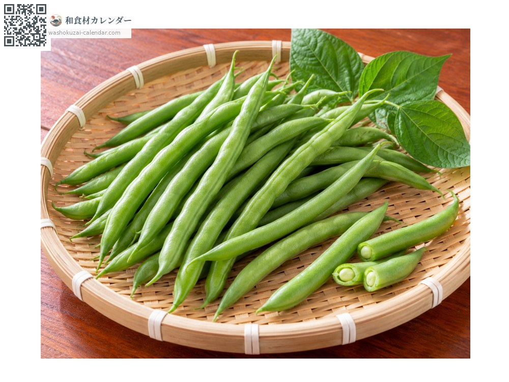
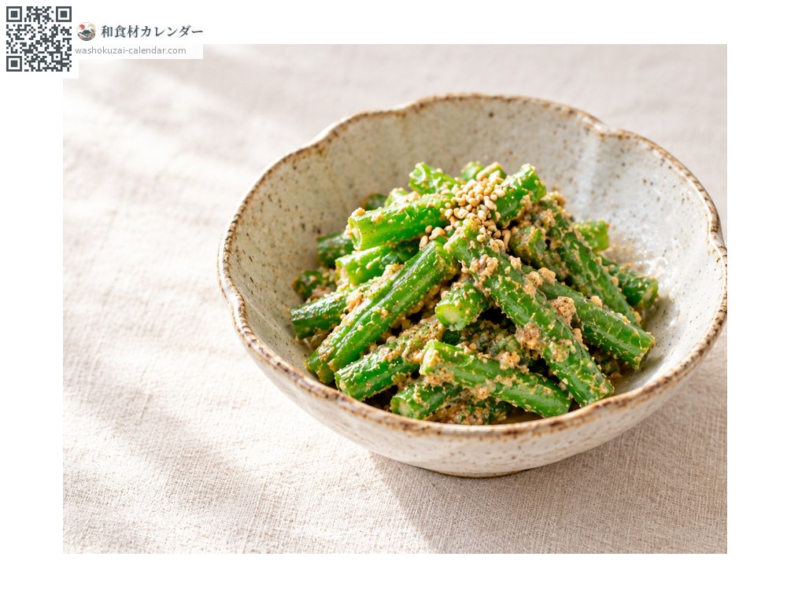
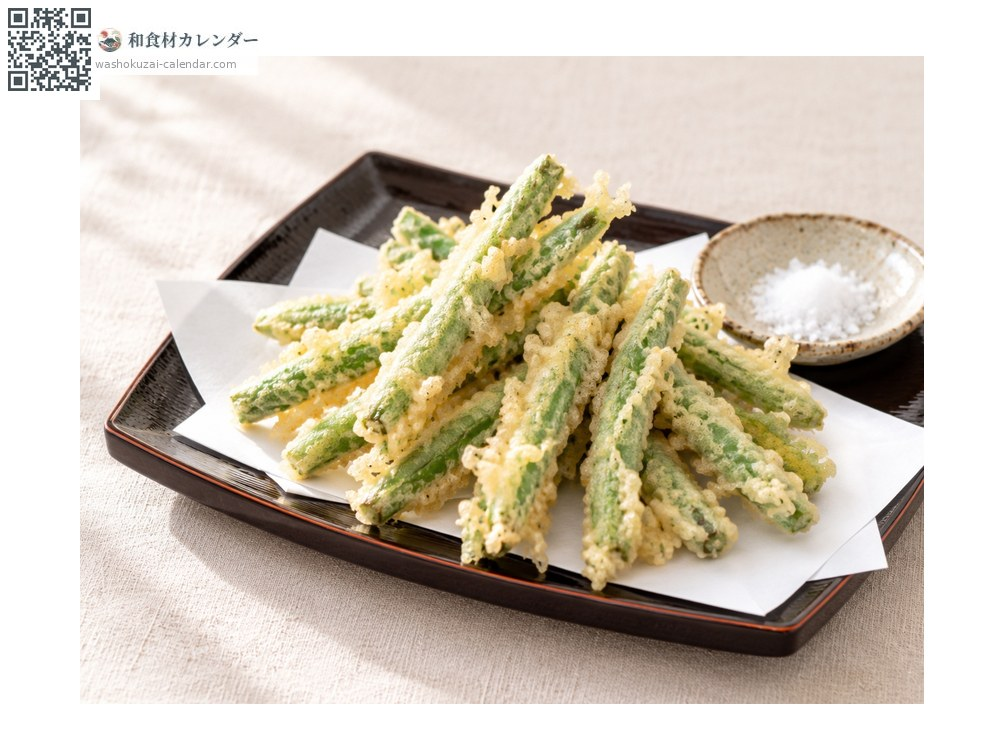
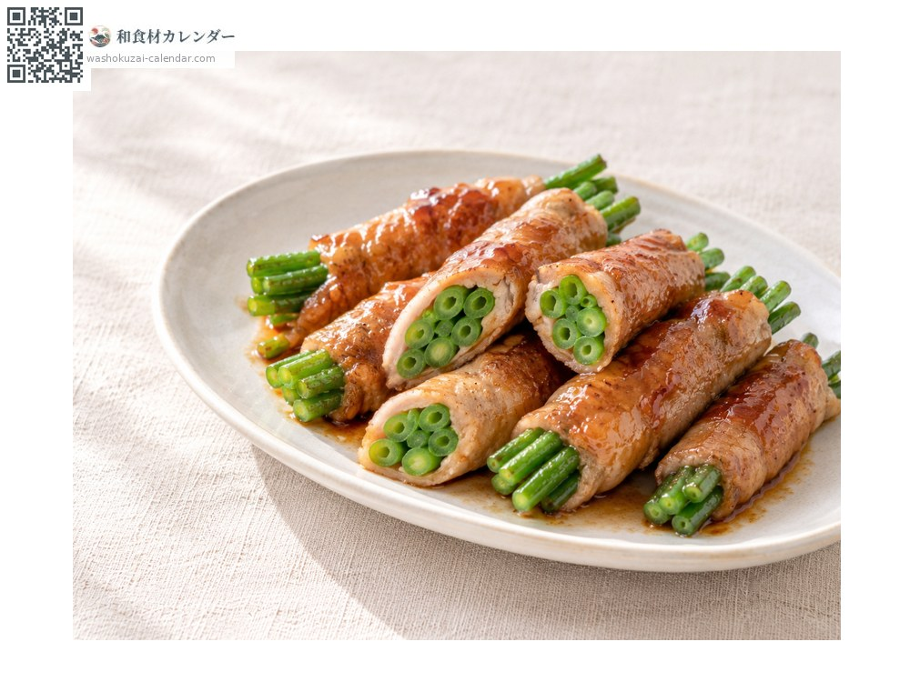
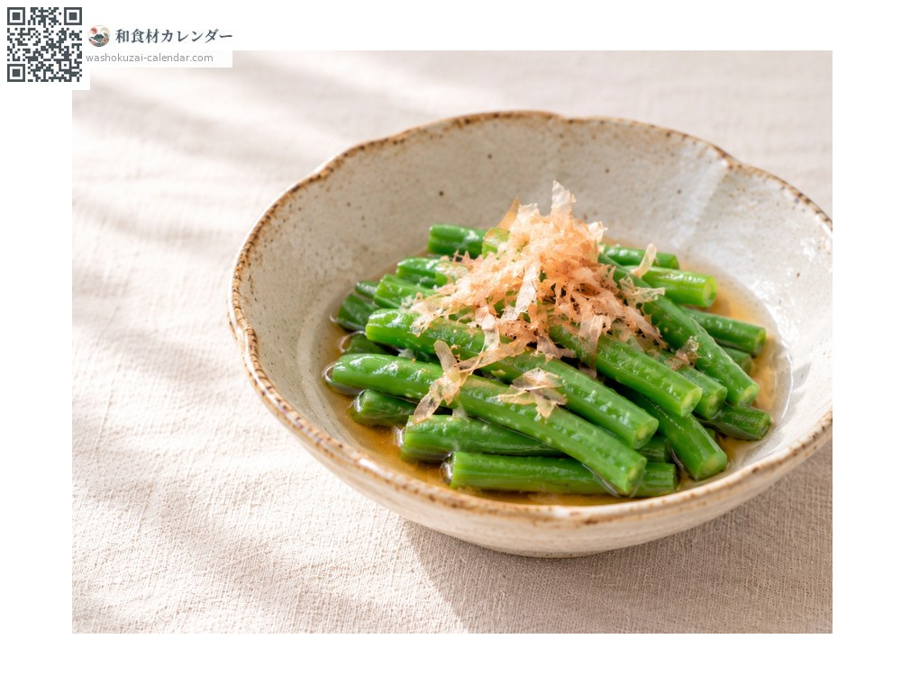

蔬菜
四季豆
インゲン いんげん ingen
別名ingen、sayaingen
當令時期為6月、7月、8月、9月

當令時期
1月
2月
3月
4月
5月
6月
7月
8月
9月
10月
11月
12月
當令有供應
料理方式

芝麻拌
燙熟切段，用芝麻粉、糖與醬油拌勻。

天婦羅
將數根綁成一束油炸。

豬肉捲
用薄豬肉片捲起煎熟，裹上甜鹹醬汁。

煮浸
用高湯稍微煮過，放上柴魚片。
挑選方式
顏色鮮豔有光澤，直到尖端都飽滿挺直。
保存方式
裝袋防止乾燥，放入冰箱蔬果室。不耐放，2〜3天內用完。
主要產地
小知識
日文名「隱元」源自江戶時代由中國僧人隱元傳入的說法。現今品種大多沒有粗筋。一年可採收三次，在關西也稱為「三度豆」。